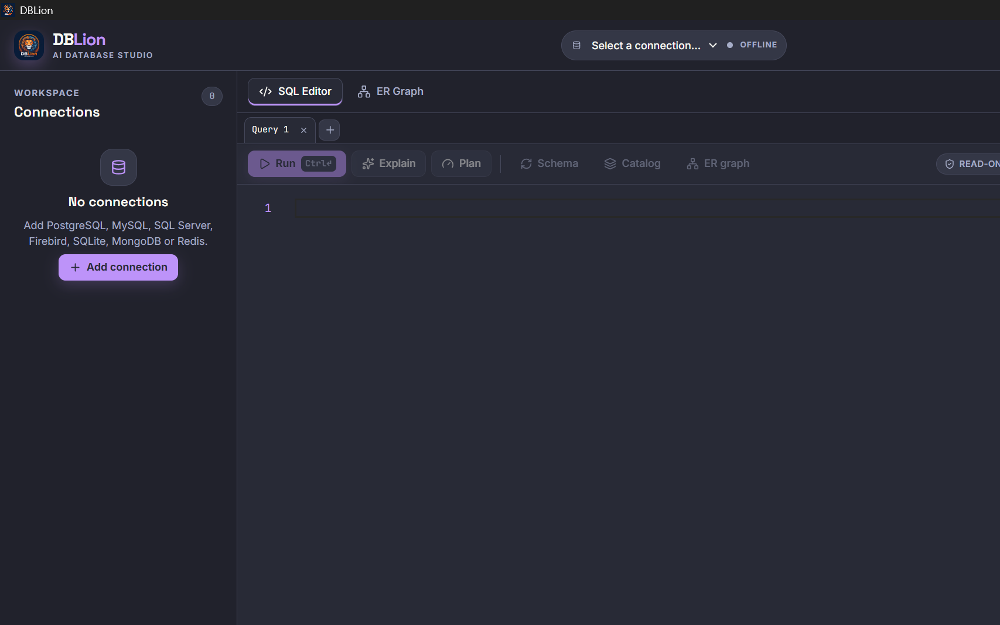
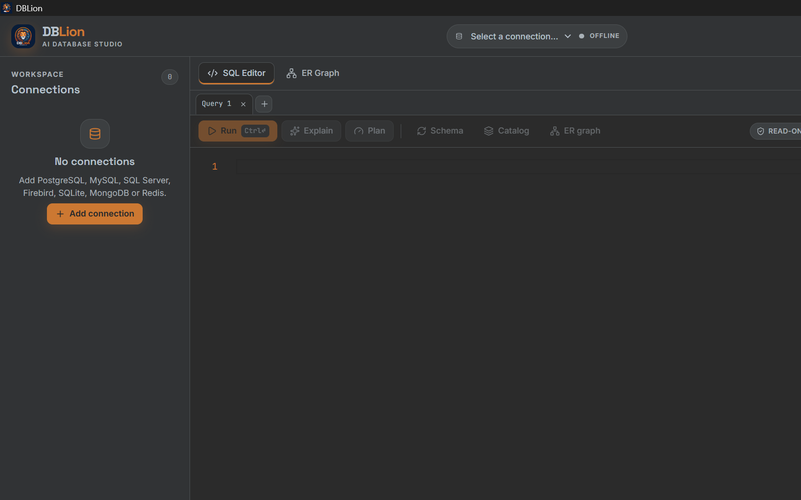
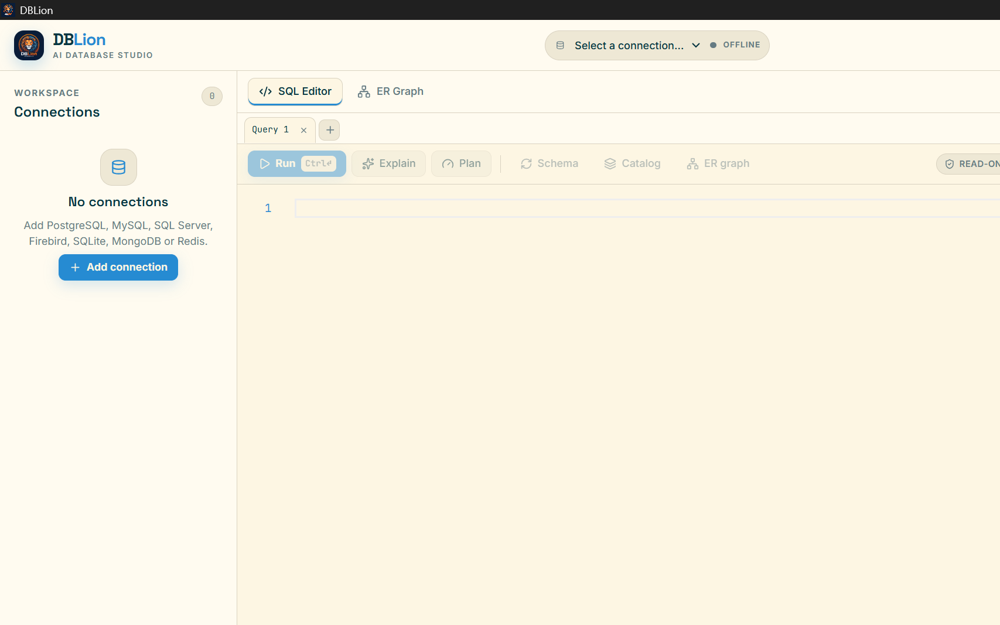
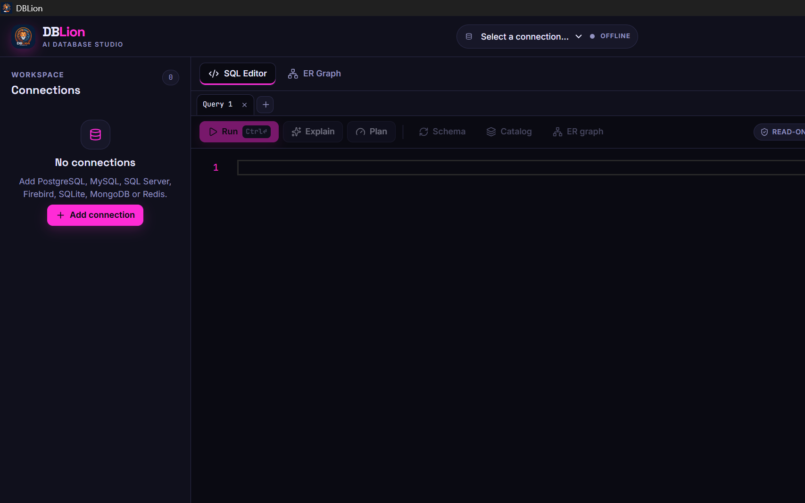

Guarded AI loop
AI drafts SQL; only you execute. Read-only default, single token.
v0.1.0 · Guarded AI database IDE · Windows x64
DBLion is a desktop AI database IDE: Electron + React + TypeScript. Read-only by default, one token, secrets in safeStorage. The AI never executes.
7 engines · 14 built-in themes · MIT · Public repo, open source
Seven engines · one guard
Fullscreen screenshot




What it is
AI drafts SQL; only you execute. Read-only default, single token.
PostgreSQL · MySQL/MariaDB · SQL Server · Firebird · SQLite · MongoDB · Redis.
Local only, no remote fetch. Shown: PyCharm, Solarized Light, Neon.
Electron + React + TypeScript, Windows x64 app, version 0.1.0 (pre-1.0).
How the guard works
The copilot drafts SQL with live schema context. Text only, with no execution path.
Read-only fence, single-use token and native confirmation bind the exact statement.
Nothing runs without your action. Grants stay the final boundary.
The guard
Run it
No Node? Grab the installer
DBLion Setup 0.1.0.exe · 133 MB · Windows x64Download v0.1.0SHA-256 EAD7FA952D3BF562B6E24D8904CCA8F44AD7BB550402CB18A8690749193AD323 · unsigned, so SmartScreen → More info → Run anyway.
1 · Clone the repo
git clone https://github.com/HyperTechDevelopment/DBLion.git2 · Install dependencies
npm ci3 · Start the app
npm run dev4 · Build a release
npm run build && npm run distNo account, no telemetry, no auto-update. The installer stays unsigned for now.
Read-only by default. The AI never executes.